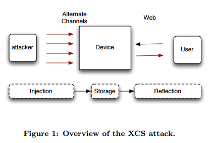
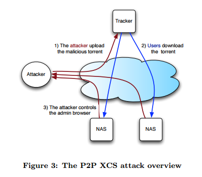
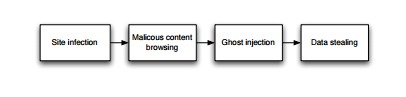
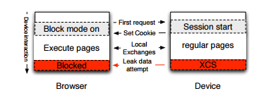

Paper：XCS: Cross Channel Scripting and its Impact on Web Applications
XCS概念：Cross Channel Scripting attack is an attack where a non-web channel (e.g. FTP, NAS/SMB, P2P, SNMP etc..) is used to inject a script into web content running in a different security context.
基本思路：将要执行的脚本以文件名扩展、额外文件（p2p）、恶意文件等形式上传或者放置在攻击者网站上，引诱被攻击者对文件列表等含有脚本的文件进行读取或者下载，让目标在不知情的情况下在浏览器中运行恶意脚本，从而获取目标Admin权限或者添加Admin账户，达到攻击的目的。

2-stage XCS exploit
Step 1: Payload/Script Injection ==> Infection
Step 2: Victim Run/Download affected file(s) ==> Execution
Example: NAS admin list files, where file name contains injected code/script.
XCS from P2P channel
攻击者将恶意文件与正常文件打包在同一个种子文件里。被攻击者通过P2P下载正常文件的同时就会将恶意文件同时下载到设备上。

Log-based XCS
攻击者在登录或者访问其他服务的时候，将恶意脚本代码放在文件名等其他的数据中，在服务器后台记录失败Log的时候，就将同时把这段恶意代码记录在Log中。这样，在Admin在页面上访问Log的时候，恶意代码就将在Admin的浏览器中执行。（感觉这种方式跟SQL注入的原理是一样的）
e.g. 这种攻击方法可以用于攻击LOM(Lights-out Management System)
Reverse XCS
Reverse XCS是利用web interface来攻击non-web channel。
跟2-stage XCS类似，Reverse XCS也是可以通过Infection与Execution两个步骤进行攻击，不过Execution过程会更加复杂，因为Reverse XCS是在恶意代码执行之后，进行端口扫描等操作，并且通过non-web channel将靶机的private文件上传给攻击者。

Defense: SiteFirewall
